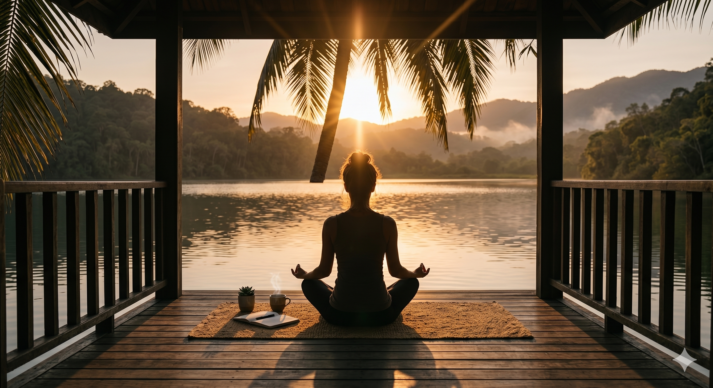

Así como cuidamos lo que comemos y cómo ejercitamos nuestro cuerpo, nuestra mente necesita atención, descanso y hábitos saludables para florecer.

La técnica 4-7-8 ayuda a reducir la ansiedad y conciliar el sueño. Haz clic en Iniciar y sigue las instrucciones del círculo.
Al igual que los grupos de alimentos en el plato del buen comer, la salud mental requiere un balance de diferentes hábitos.
Dormir entre 7 y 8 horas es crucial. Durante el sueño, el cerebro procesa emociones y repara tejidos. Crea una rutina nocturna libre de pantallas.
Somos seres sociales. Hablar con amigos, familiares o compartir un hobby reduce el estrés y genera un sentido de pertenencia vital para la mente.
Identifica qué te genera ansiedad. Prácticas como leer, escuchar música, meditar o hacer ejercicio (como viste en la sección Gym) liberan tensión.